A glimpse of a possible future
Perhaps traders won’t always be just a menu away.
The way trade works in OpenFA may look quite different someday.
{kind=link}
{kind=link}
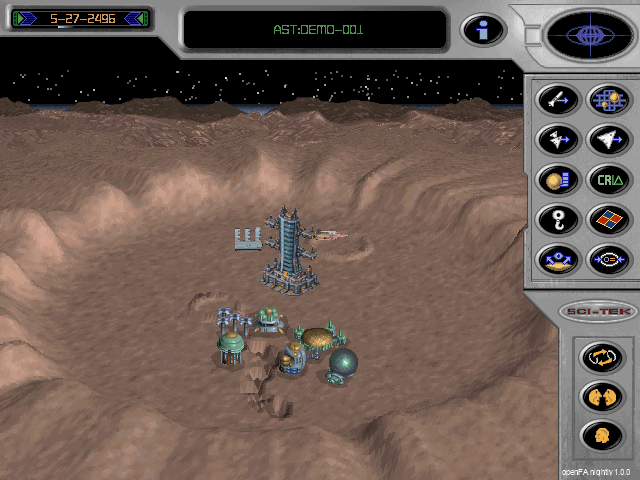
 OpenFA
OpenFA
Development journal
Short updates on recovered behaviour and working game systems.
OpenFA is a spare-time project with no fixed release schedule.
A glimpse of a possible future
The way trade works in OpenFA may look quite different someday.

· Preview 0.495 · Original-game reconstruction
Preview 0.495 restores working Asteroid Engines controls and lets the player actually change an asteroid's movement.
The player can change asteroid heading and engine power from the reconstructed control view while the map shows the selected asteroid and its movement vector relative to nearby objects.
The same work also corrected the movement timing of ships, fleets and missiles to match the original game. The screen is therefore more than a visual recreation: its controls really affect the game world.
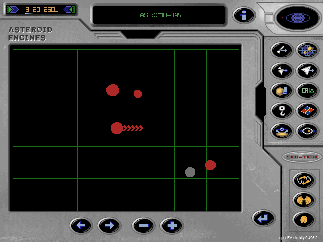
Public preview 0.495
Asteroid Engines, strategic movement commands and the localized control screen are available in the 13 September preview.
– · Community
Preview 0.478 triggered the first real external testing cycle of OpenFA.
Players testing the 10 September build reported several problems that had escaped the existing replay and regression coverage. The reports were reproduced, fixed and folded into the next public preview rather than remaining as developer-only observations.
That makes the step from 0.478 to 0.495 the first complete public feedback loop for the project: release → external testing → reported problems → verified fixes → next release.
Community testing becomes part of development
Preview 0.495 is the first OpenFA build to include fixes driven directly by feedback from public nightly users.
· Core
OpenFA game worlds are no longer limited to the scale of the original Fragile Allegiance arena.
The map engine can now handle worlds far larger than the original game. A smooth camera and extended zoom make those larger areas practical to navigate, while classic-sized maps continue to work as before.
The larger world is an OpenFA extension rather than a replacement for the original map scale: standard-size games remain valid while custom scenarios can spread asteroids, fleets and colonies across far greater distances.
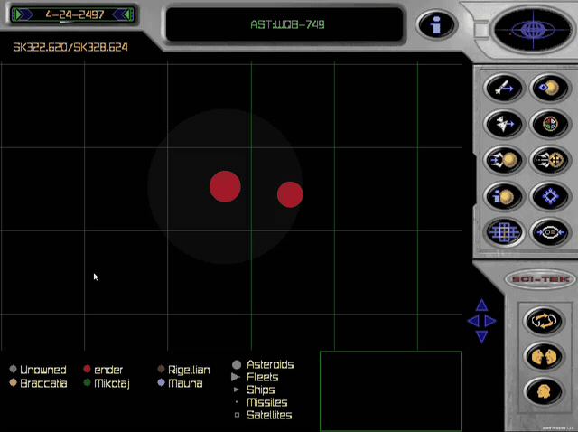
Preview 0.478
The 10 September preview is the first public build to expose the enlarged strategic-map foundation.
· Preview 0.478 · Package extensions
The package system is now being used for optional mechanics and presentation, not only for reconstructing the original content catalogue.
The clearest examples are the Interceptor Missile, which autonomously engages incoming missiles and can also attack asteroids, and the Decoy Missile, which separates into four harmless targets near its destination to saturate missile defences. Both missiles are delivered as optional .ofapkg extensions instead of being hard-wired into the standard game.
Preview 0.478 ships with 12 .ofapkg packages, including the new missiles, rare asteroid types and extra surface information. It is the first public build where OpenFA extensions are clearly visible during ordinary play.
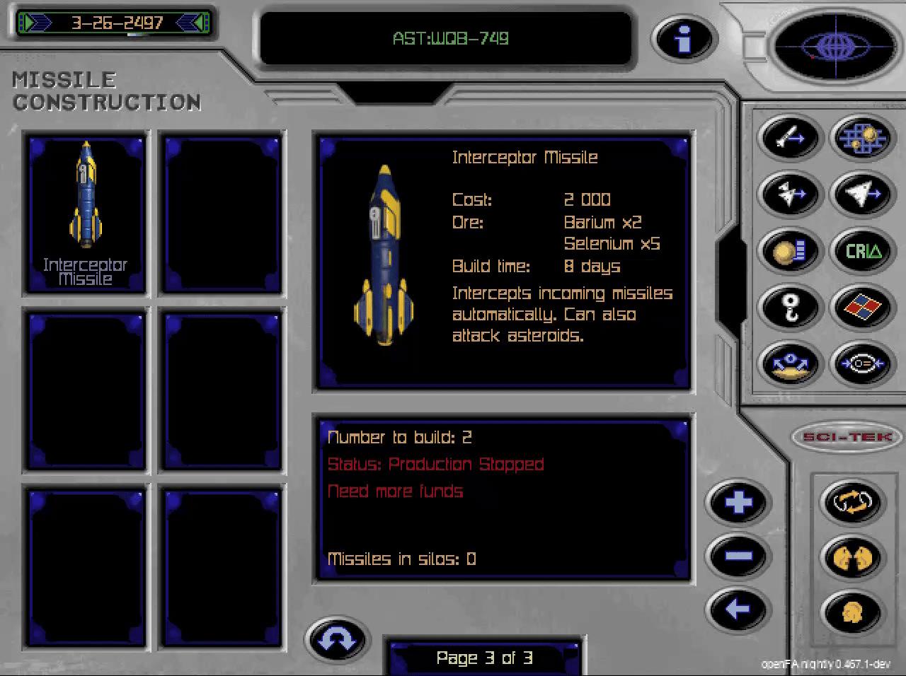
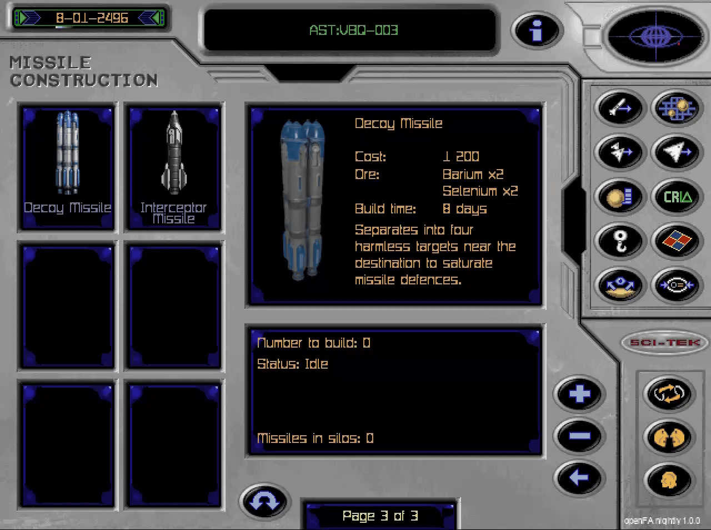
Extension boundary proven in gameplay
New gameplay elements can be added as separate packages without changing the standard Fragile Allegiance experience.
· Package extensions
Optional package-defined HUD layers can expose information that the original interface kept difficult to inspect.
The planning layer puts useful information directly on the asteroid surface: Screen Generator coverage, building footprints and obstacles, power priorities and the exact reason why a selected building cannot currently be placed.
A separate set of overlays shows construction progress and building condition, while ship health can be seen directly in the inventory. Each display can be enabled independently, and turning it off does not affect gameplay or saved games.
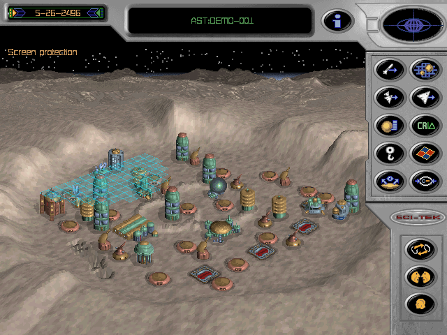
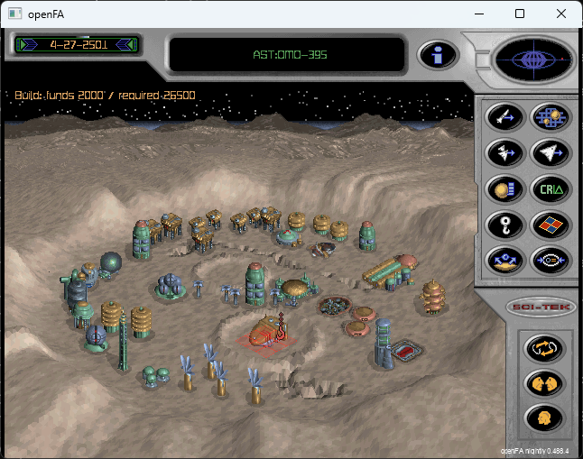
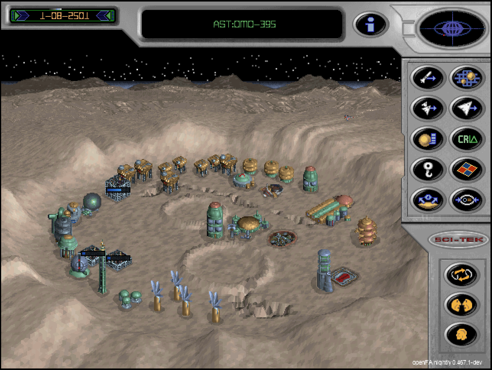
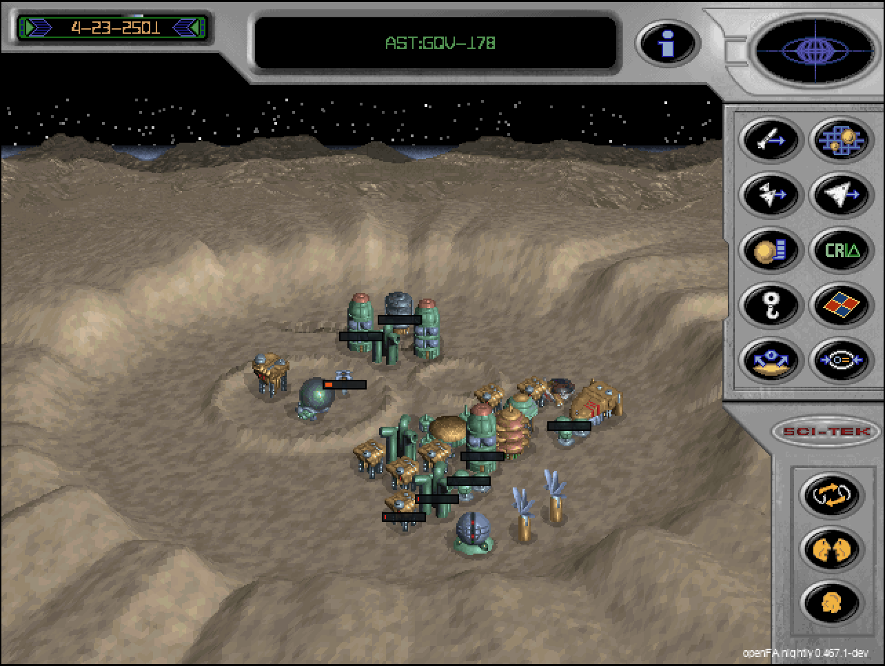
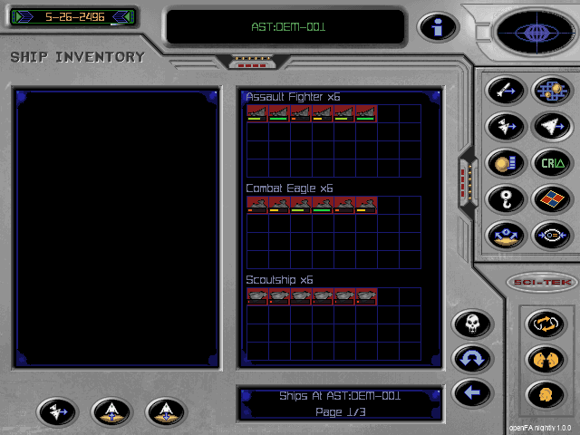
Read-only extensions
The overlays only show extra information. They do not change the rules of the original game.
· Original-game research
The original Fragile Allegiance multiplayer has been studied far enough to explain how several players stayed in the same synchronized game.
We now know how players joined a session, how one machine coordinated the game, how commands reached every participant and how the game tried to recover when synchronization went wrong. The old connection methods used by the DOS release have also been identified.
This does not mean multiplayer is already playable in OpenFA. It does mean the important rules are now known, so a modern multiplayer implementation can be built without guessing how the original behaved.
Recovered protocol behaviour
Future multiplayer work can now follow known rules instead of relying on trial and error.
· Preview 0.370
OpenFA leaves the development environment for the first time as a downloadable community-testing build.
Preview 0.370 is explicitly published as an unfinished development snapshot. At this point the mechanics exercised by Fragile Allegiance tutorials 1–6 can be tested end to end, while incomplete systems, regressions and differences from the original are still expected.
The preview requires a locally installed legal copy of the original game and uses First-Run.ps1 to select its assets. The source repository remains private for now; feedback and reproducible bug reports are collected through the public preview project.
Public testing begins
0.370 establishes the preview-release line: testable builds without presenting the reconstruction as a finished product.
· Extension system
.ofapkg grows into a full mod and extension systemPackages started as a way to describe the construction catalogue. They can now do much more.
Buildings, ships, fleets, missiles, ores, research, trade, personnel and scenarios no longer have to be hard-wired into one fixed version of the game. OpenFA can load their definitions from active packages together with the graphics, animations and on-screen information they need.
Packages are not separate programs running inside the game. They use features already provided by the engine and configure them with data. That makes it possible to add new missiles, surface overlays, industry systems and other ideas while keeping the faithful original game as a separate content set.
From reconstruction to an extensible game
Fragile Allegiance remains the baseline, while extra content and new ideas can now be added separately and enabled only when the player wants them.
· Tutorial 2
The recovered Ship Construction lesson now runs from start to finish.
The lesson covers building requirements, small craft, hardpoints, build orders, Ship Yard status and order cancellation. It then moves to the Orbital Space Dock for larger designs.
The tutorial uses the same screens and rules as normal play. Nothing is created through shortcuts just to make the recording look correct.
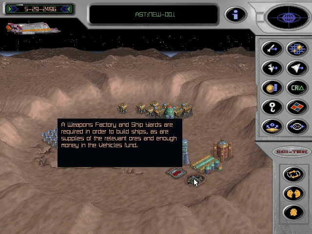
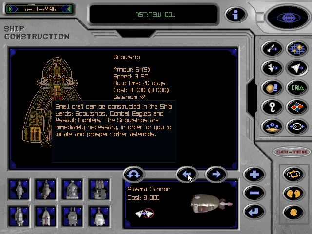
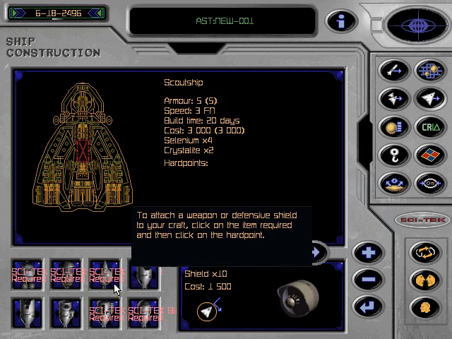
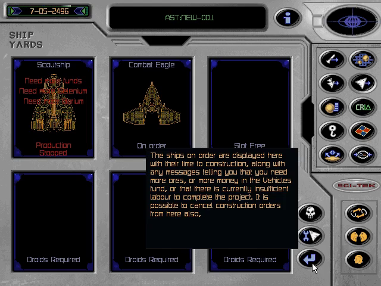
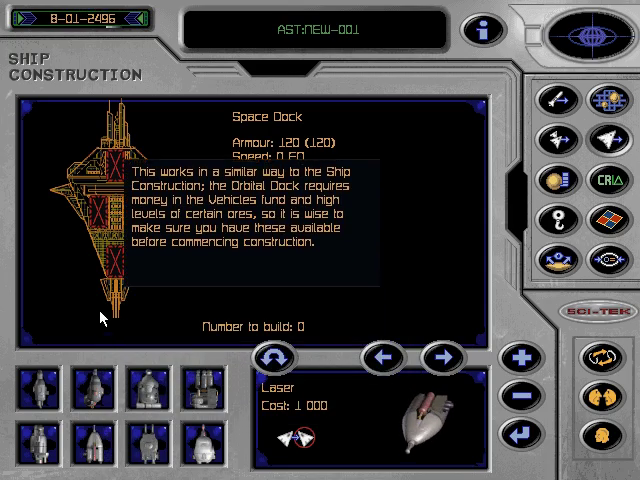
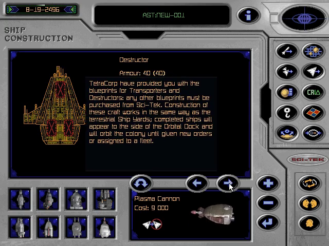
Verified in the client
All 272 recovered actions completed in the target client with original assets and narration.
· Tutorial 1
The full Colony Building lesson now plays in OpenFA.
The final section covers tactical placement, protected and affected areas, demolition and insufficient-funds feedback.
Original pointer movement, timing, subtitles and narration are retained. Every building action still uses the same gameplay rules as normal play.
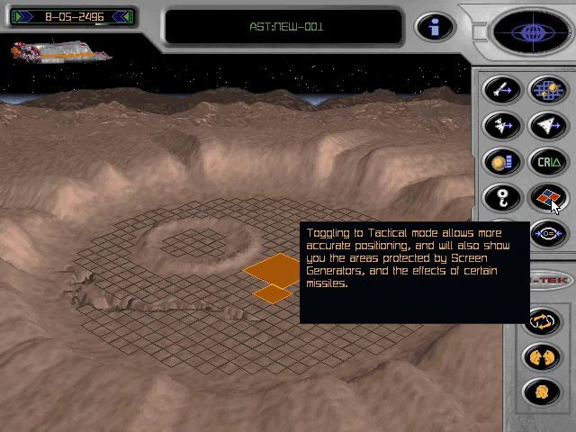
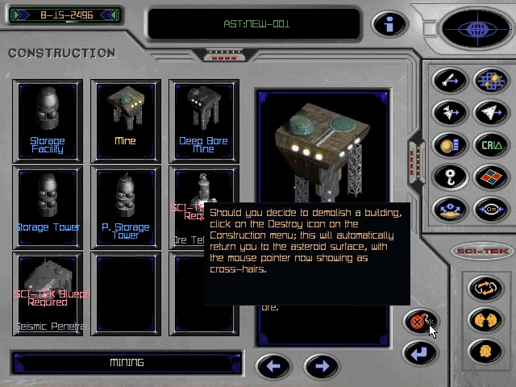
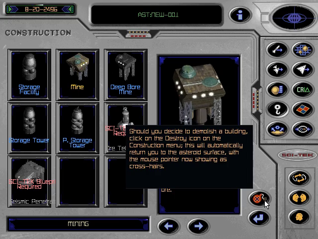
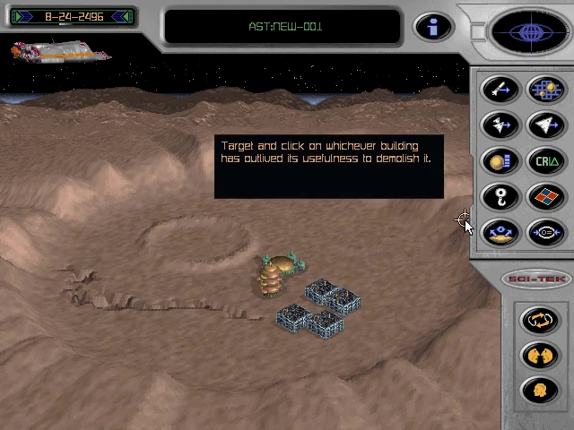
Verified in the client
All 200 recovered actions completed in the target client with original assets and narration.
· Tutorial 1
The recovered lesson has reached the Construction menu and asteroid surface.
It opens the catalogue, selects a building and returns to the surface. The building is then placed exactly as it would be during normal play, including space, money and construction-time requirements.
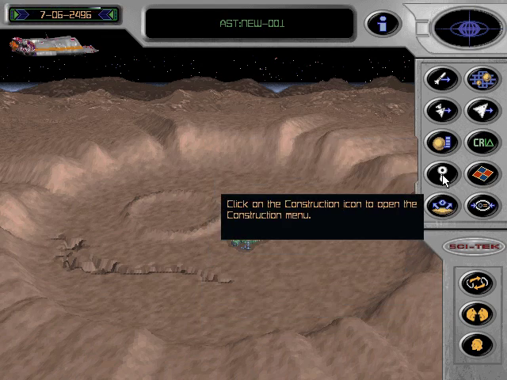
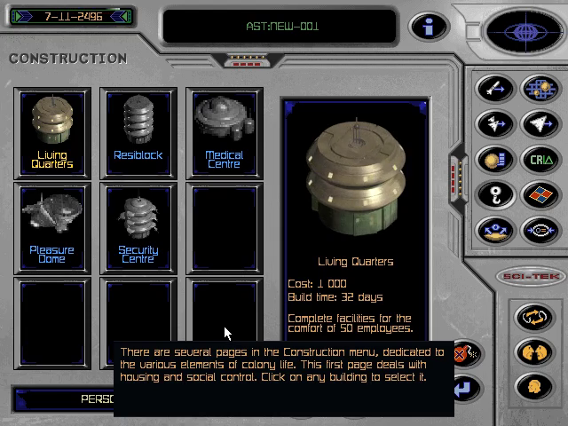
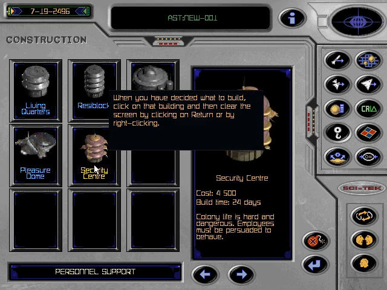
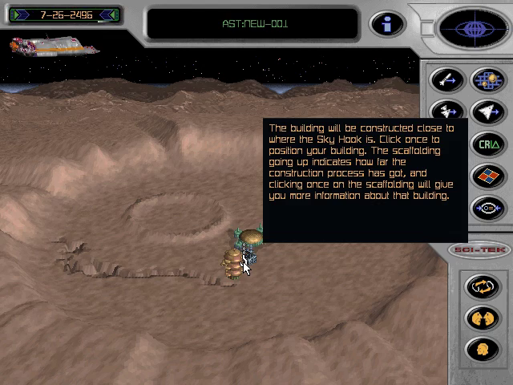
Implemented path
Catalogue selection and surface placement use the same commands as ordinary play.
· Tutorial 1
The first recovered sequence now reaches the colony finance screen.
The lesson starts on the strategic map, opens the highlighted asteroid and explains the five funds. Budget changes use the recovered left and right drag controls.
Pointer movement, subtitle text and narration timing come directly from the original tutorial data.
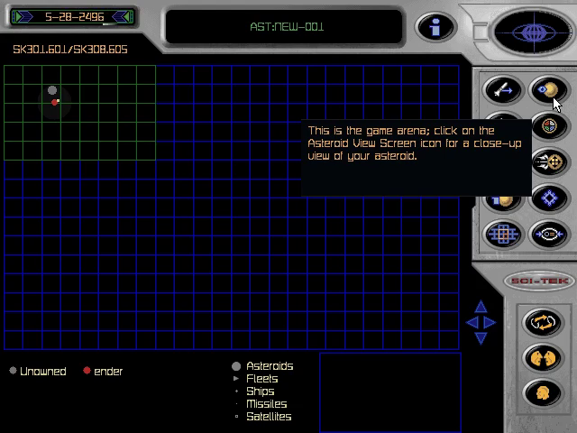
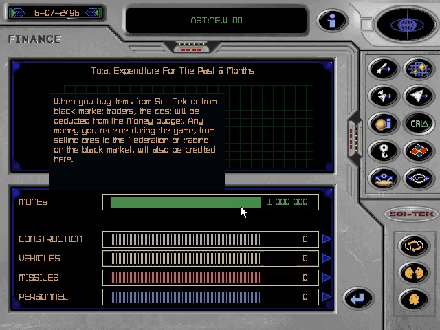
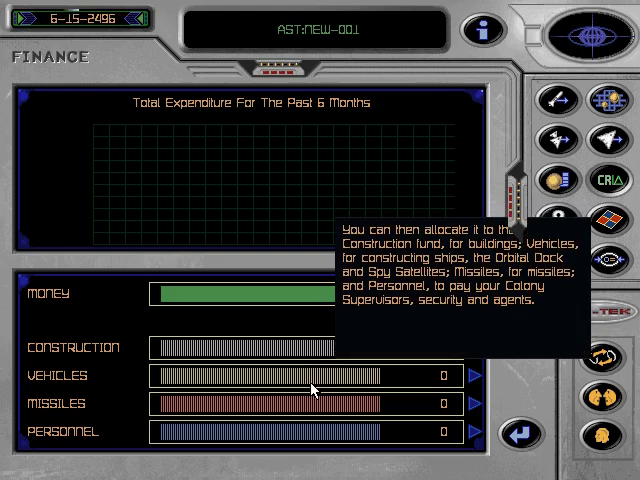
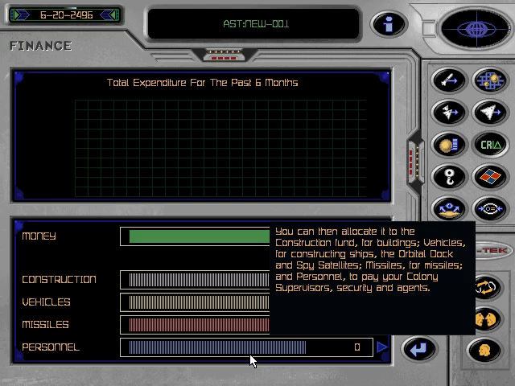
Recovered scope
Map navigation, account descriptions and budget controls follow the original action stream.
· World reconstruction
The same original save can now be shown both as an asteroid colony and as a world on the strategic map.
OpenFA reads asteroids, factions, buildings, ships, personnel and diplomacy from original saved games. Parts that are not yet understood are preserved so nothing is lost. The colonies shown here therefore come from real saves rather than hand-made demo data.
The asteroid surface, buildable areas and strategic map all use the same world data. What the player sees and clicks therefore matches the reconstructed game state.


Confirmed result
Map origin and cell pitch match the reference; zoomed asteroid centres differ by at most one pixel.
· Foundations
The project starts with two simple rules: do not guess how the game works, and do not redistribute assets that belong to the original.
Screenshots show how the game should look. The program, its data and saved games help explain why it behaves the way it does.
OpenFA does not redistribute the original graphics, sounds or videos. They are loaded from a legally installed copy of Fragile Allegiance selected by the player.
Even at this early stage, game content is being separated from the engine itself. That idea later grows into the .ofapkg format now used for mods and optional extensions.
AI helps navigate the decompilation. Tests replay asset, save and simulation cases; generated explanations remain hypotheses.


Working rule
A screenshot can show what something looks like. To know how it really works, the project needs the program, data, a saved game or a repeatable test in the original.
· The beginning
OpenFA began with a decoder for the original intro graphics.
On 23 September 2023, a Python script decoded simple .256
files from the game intro. A full reconstruction of
Fragile Allegiance was not yet planned.
Original-game research artefacts
Early decoder output: incorrect palettes, offset tests and the final VGA conversion.


Early research timeline
Python decoder for simple .256 intro files.
First documented .256 fields and data boundaries.
IDA Pro locates and decompiles the loader fragment referencing the intro file.
Decoder produces usable images; PNG-to-.256 encoding tests the format in reverse.
File offsets and PALETTE are verified, including six-bit VGA conversion.
Research expands to terrain, craters, shading, colours and the order in which the visual layers are drawn.
The decoder led to work on palettes, compression, animation, saves and game behaviour.
The current codebase came later; the 2023 files remain decoder references.
Initial result
First working OpenFA research tool.
Project updates
Follow current preview builds, development videos and community discussion alongside the verified journal entries.
{kind=link}
{kind=link}
{kind=link}
{kind=link}
{kind=link}
{kind=link}
{kind=link}
{kind=link}
{kind=link}
{kind=link}
{kind=link}
{kind=link}
{kind=link}
{kind=link}
{kind=link}
{kind=link}
{kind=link}
{kind=link}
{kind=link}
{kind=link}
{kind=link}
{kind=link}
{kind=link}
{kind=link}
{kind=link}
{kind=link}
{kind=link}